Code
%%{init: {"flowchart": {"htmlLabels": false}} }%%
graph TD;
n1--> n2 --> n3 --> n4 --> n5 --> n6--> n1
much of the material for these slides comes from fernando
Register allocators often have to manage constraints. For example, a function argument may need to be placed in a specific physical register.
Register allocation is NP complete. Given a program P and K registers, is there an assignment where each variable gets a register and all simultaneously live variables get different registers
Gregory Chaitin showed that if we have a graph that we want to paint with K colors, such that adjacent vertices get different colors we can construct a program where the program can be allocated with K registers iff the graph can be colored with K colors
Chaitin used the interference graph. One vertex for each variable, and edge between variables that are simultaneously live.
Two variables that interfere cannot be in the same register
If two variables are alive at the same point, and they have different values, they have to be assigned different registers
Approximate this by ignoring “have different values” - Different registers if alive at the same point. (id is special)
MaxLive is the max number of values live at the same point
MinReg is the min number of registers we need
minReg >= MaxLive
draw it?
MaxLive = 2 Can we compile this with 2 registers? - Need 3
draw it?
The interference graph is a pentagon, needed 3 registers.
A pentagon is the smallest graph whose chromatic number (number of colors needed 3 ) is less the maximum clique (2)
We need to copy e2 to e, but we have no registers left, so how do we swap them?
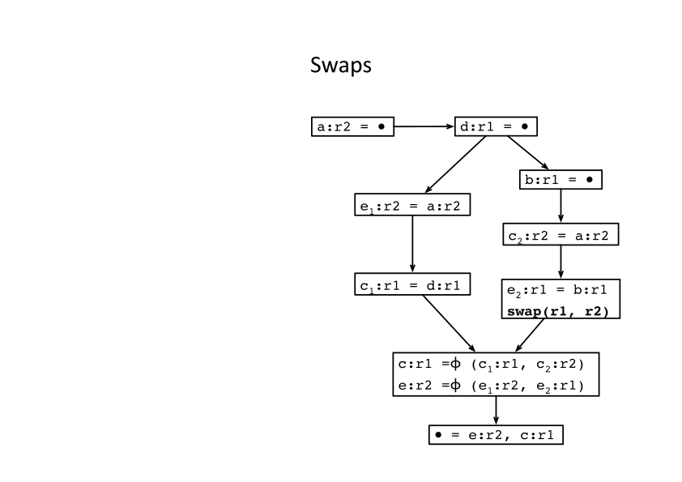We have been able to compile the SSA-form program with less registers than the minimum that the original program requires.
Two claims
suppose we have an ordering of the vertices, where the neighbors of a node to the left of the node in the ordering from a clique. If there are K such neighbors we need K+1 colors
%%{init: {"flowchart": {"htmlLabels": false}} }%%
graph TD;
n1--> n2 --> n3 --> n4 --> n5 --> n6--> n1
draw it
given this order - it is simple to pick the colors
once we have an order , we can greedy color the nodes. When we get to the n’th node, all the neighbors are in a clique and are colored, so just pick one
maybe try not to clobber a copy
all nodes in the clique need different colors
In a chordal graph the size of the largest clique equals the chromatic number
if we find the point in the program with max live variables, we know the chromatic number
What is the dominance tree of this program?
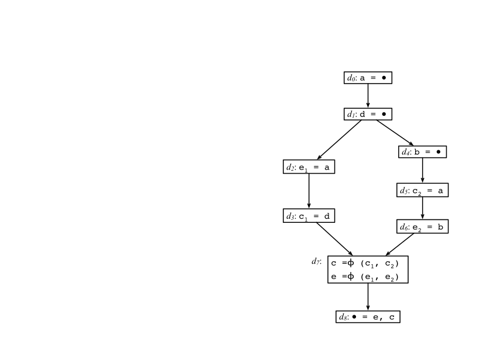draw am example of a cord graph
we number the vertices of G
v0,v1,v2,…., vi, …
consider vi all the neighbors to the left are a clique (all connected )
once we have an order (the reverse order above), we can greedy color the nodes. When we get to the n’th node, all the neighbors are in a clique and are colored
all nodes in the clique need different colors
In a chordal graph the size of the largest clique equals the chromatic number
if we find the point in the program with max live variables, we know the chromatic number
if we ever have a program point where the number of live variables is > MaxRegs we will have to spill - so do it here
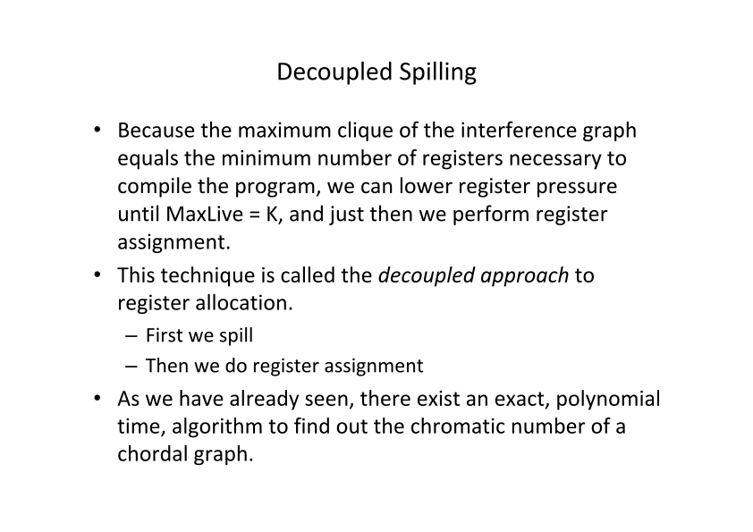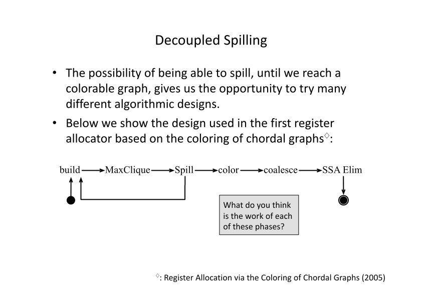
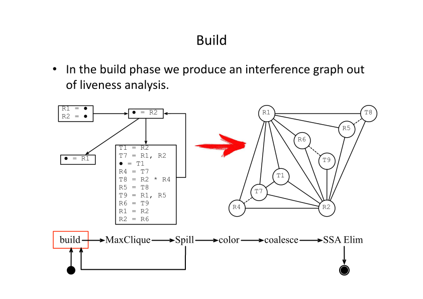
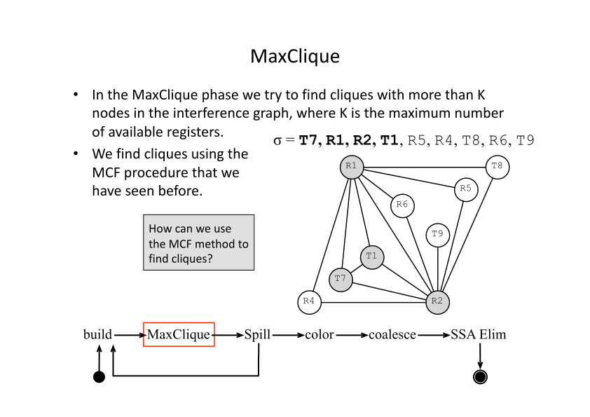
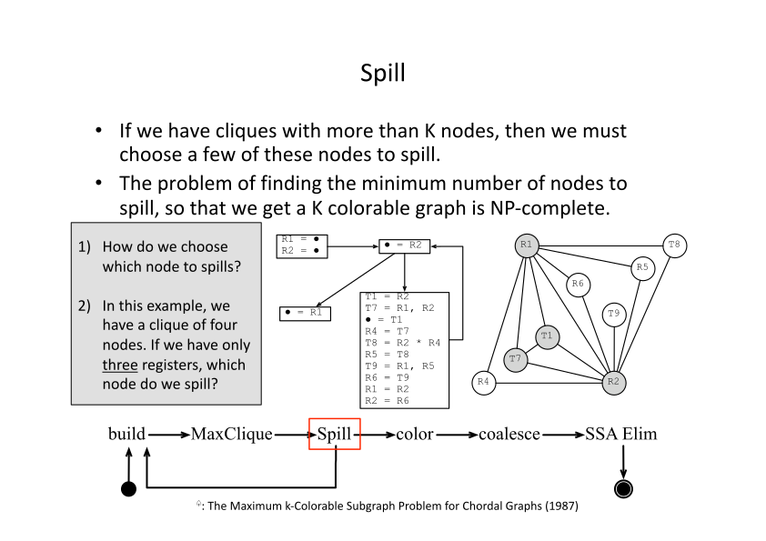
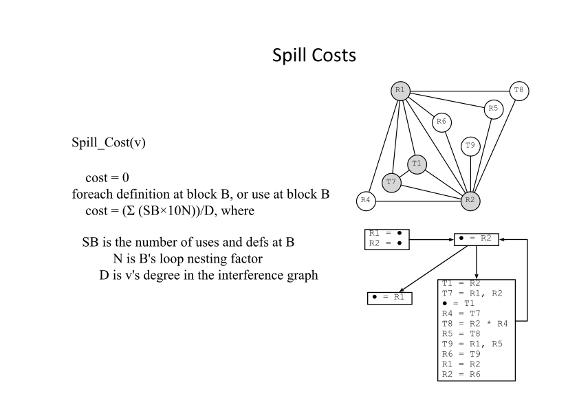
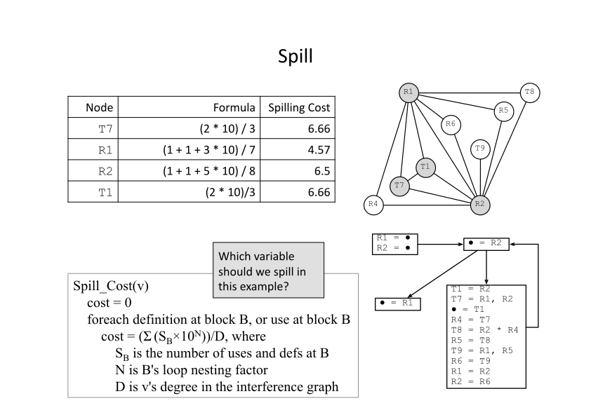
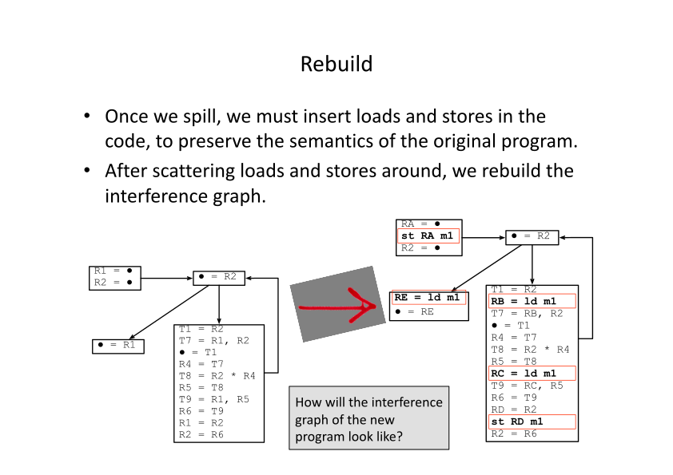
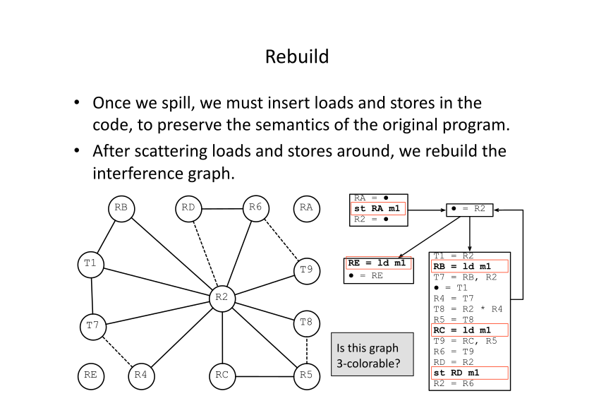
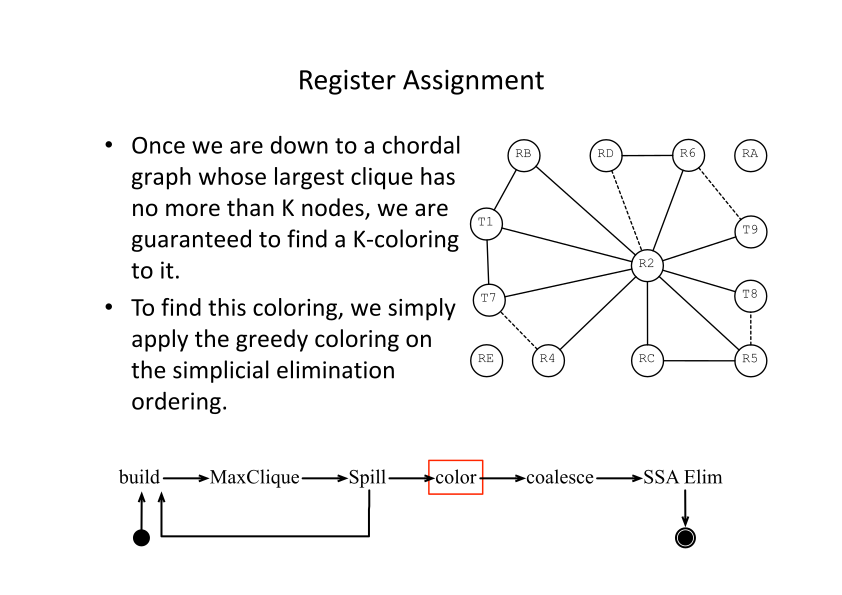
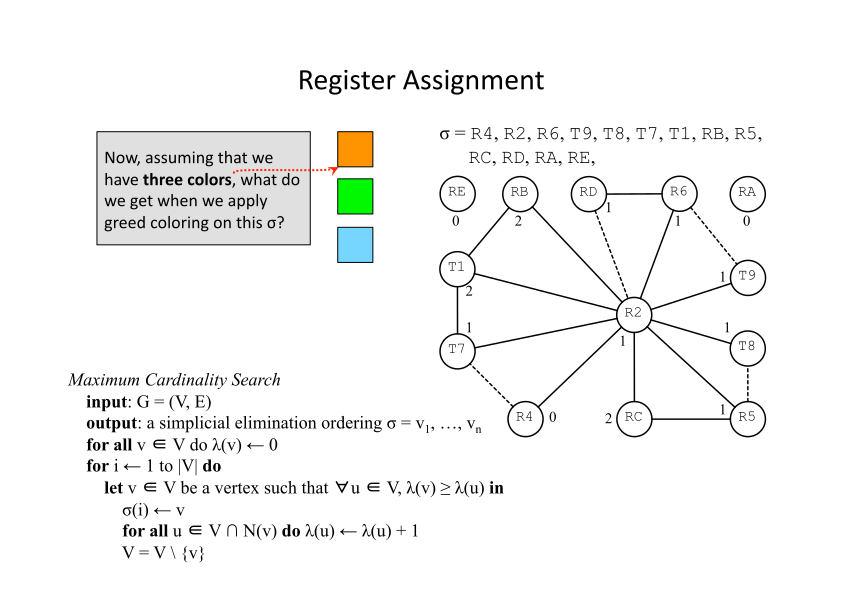
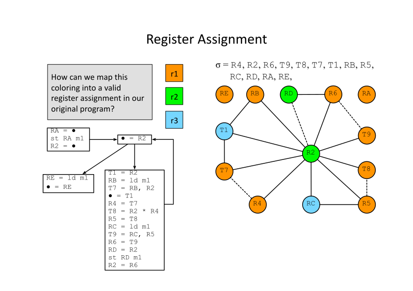
if we assign both sides of a copy to the same register, we can eliminate the copy.
input: L list of copy instructions, G=(V,E), K
output: updated graph G'
G' = G
for all x=y in L
sx is the set of colors in the neighborhood of x
sy is the set of colors in the neighborood of y
let c be a color < K that not in either set
add xy a new node xy is ajacent to all node in the union of neighborhoods
remove x and y from G'xy is a merge of x and y
In a strict ssa form the definition of a variable dominates all the uses
lemma1 : if two variables interfere then the def of one dominates the def of the other
lemma2 if two variables a and b interfere and Da < Db, then a is live at Db
lemma3 if u,v,w are variables u-v interfere and v-w interfere and u-w do not if Du < Dv then Dv < Dw
thm: the interference graph of an ssa form program is chordal